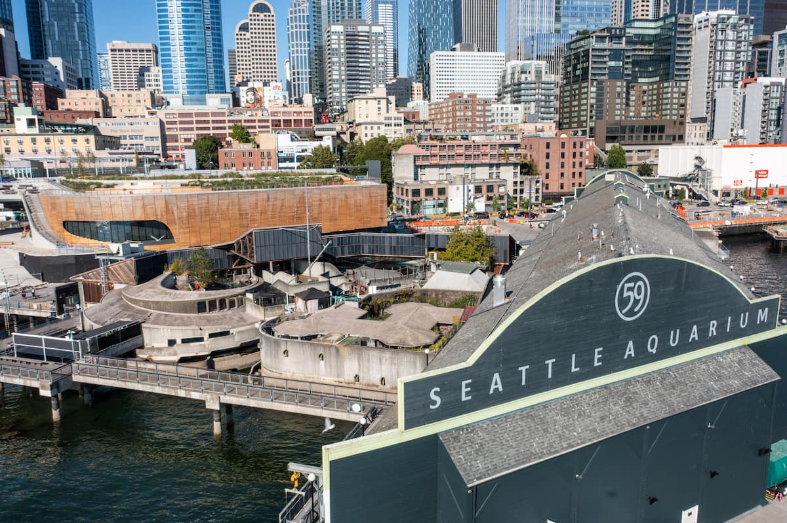
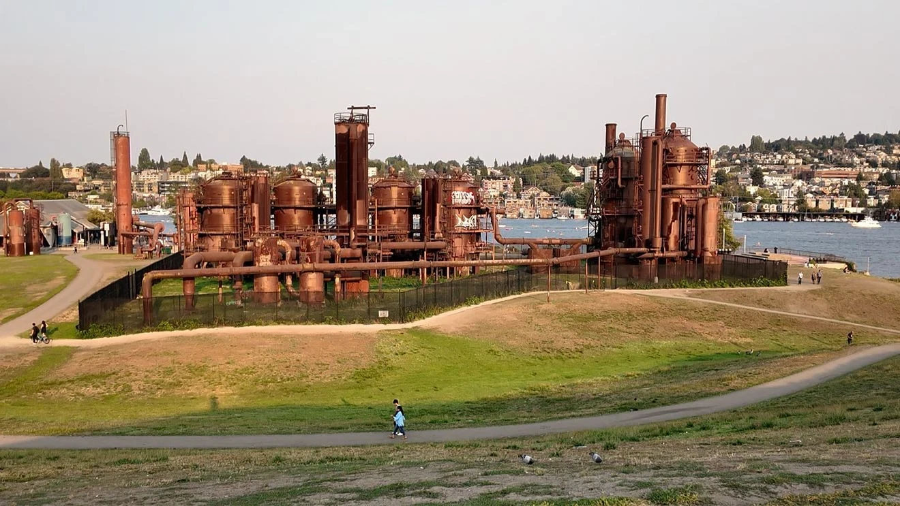
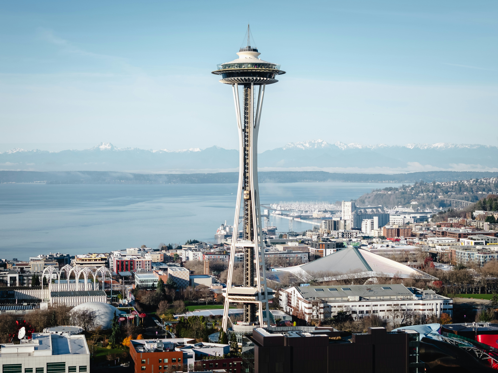
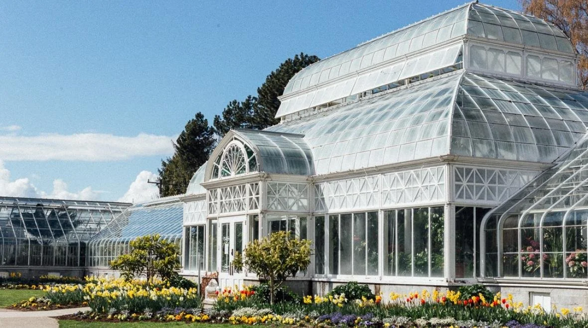

Seattle Aquarium

(2) The Seattle Aquarium is a wonderful place to spend your day in Seattle. After opening the Ocean Pavilion, this incredible structure is 50,000 square foot and includes a 360,000-gallon curved saltwater tank. The tank will be home to more than 3,500 Pacific Ocean native animals and plants, including sharks, rays, schooling fish, and 30 species of coral.(Hycrate, 3) They also have an animal care area where visitors can see how the Seattle Aquarium trains and cares for the animals in the massive tank. This new building also connects the pier to Pike Place Market, making walking around downtown much safer and easier. The old building is just as incredible with the Jellyfish ring of life, touch tanks, underwater dome, and a huge mammal exhibit.
Gas Works Park

(4) Gas Works Park is an iconic part of Seattle featured in many pop culture projects, such as the paintball scene from “10 Things I Hate About You.” The park has a giant hill with a sundial at the top, a massive historic coal gasification structure, and a playground. The reason I love Gas Works tho is because of all the community events held there. My favorite is Yoga in the Park hosted by Yerbana. It's free, all you have to do is bring a yoga mat!
- learn more about the history of Gas Works park structures here! Gas Works Park Seattle historylink.org
- Join Yoga in the park! Yerbana’s Yoga in the Park
- Watch the "10 Things I Hate About You" scene on YouTube
Space Needle

(5) How could I not mention the most iconic part of the Seattle Skyline, the Space Needle! Opening on April 21, 1962, for the World’s Fair, the Space Needle not only has stunning views of the city, but it also has a revolving restaurant, a revolving glass floor, and a cafe! When you visit the website (linked below), they will tell you when the sunset is so you can plan your trip to have the most stunning view! I usually just have a coffee at the cafe, but it has always been a dream of mine to eat at the revolving restaurant.
Volunteer Park Conservatory

(6) Volunteer Park Conservatory is one of seattles hidden gems. With only 6800 square-feet Volunteer Park Conservatory is divided into five distinct houses, which allows for a diverse plant collection.(Landscape Information) from cacti to tropical orchids and other incredible plants. I don’t want to spoil it, so go visit and see all the cool plants and complete their plant scavenger hunt! The conservatory is Open Tuesday through Sunday, 10 am to 4 pm, and has free admission on the first Thursdays of each month with no reservations or tickets needed. (Hours and Admission) Although it is only a $6 admission fee normally, they offer a student discount if you show them your Canvas or other proof of enrollment. Volunteer Park Conservatory is my go-to activity when I'm showing people around Seattle. It's also surrounded by the beautiful Volunteer Park and the Seattle Asian Art Museum.
- Volunteer Park Conservatory Landscape Information
- Volunteer Park Conservatory Hours and Admission
- Friends of the Conservatory Home Page
- Seattle Asian Art Musieum
- Volunteer Park Seattle Parks and Recreation page
Additional Refrences:
- Google fonts: Risque
- Image of the Seattle Aquarium: Seattle Aquarium | Inspiring Conservation of our Marine Environment. Seattle Aquarium, seattleaquarium.org
- Seattle Aquarium Ocean Pavilion Hycrete
- An image of Gas Works Park. KOMO News, . Source: KOMO News
- The iconic space needle stands tall over seattle skyline. Josh Hild, . Source: Unsplash
- Outside view of Volunteer Park Conservatory. Volunteer Park Conservatory, Source: volunteerparkconservatory.org